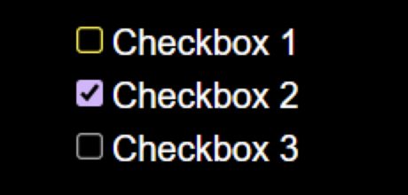
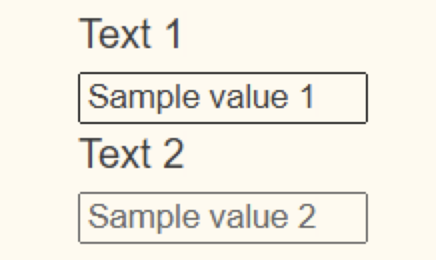
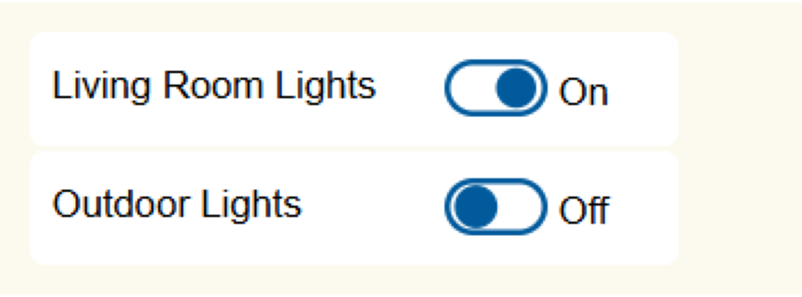
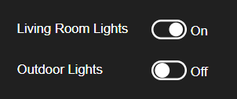

Supporting Color Contrast Settings
Introduction
Some people with visual disabilities using the web need more than the required default minimum color contrast. Additionally, people with visual or cognitive disabilities sometimes need combinations of colors that are very different from those specified by an author. Operating systems provide settings that enable those users to increase contrast and choose alternate color themes. Web authors can ensure their content is accessible to those users by appropriately responding to such operating system settings. This section explains how to make components responsive to color and contrast settings and how to test support for those settings.
This section covers:
- Operating system and user agent features that enable users to adjust rendered colors and contrast ratios.
- Using the CSS media queries that support user color and contrast settings (
prefers-contrast,prefers-color-scheme, andforced-colors). - Using
<system-colors>CSS data types to provide consistent rendering of components. - Using the value of
currentcolorto inherit the value of thecolorproperty value of text content that responds to user color and contrast settings. - The benefits of using SVG graphics when creating components that adapt to color contrast and theme settings.
User Options for Adjusting Colors and Contrast
The following table summarizes operating system settings that enable users to adjust color themes and increase contrast as well as authoring practices for supporting those settings in web content.
| Feature | OS | Description | Authoring Practices |
|---|---|---|---|
| Invert Colors |
Operating system accessibility setting that automatically transforms all rendered colors in all apps, including browser content, by subtracting each RGB value from 255. This is a simple way of enabling users to turn a light color theme into a dark color theme or vice-versa. It is a prominent feature in the accessibility settings of most operating systems. Examples of color inversion:
|
Browsers do not provide a way for authors to determine whether a user has the setting for invert colors enabled. For content to render well when invert colors is enabled, ensure it meets the minimum color requirements specified by Web Content Accessibility Guidelines (WCAG). | |
| Increase contrast | Operating system accessibility setting indicating the user prefers contrast that is stronger than the default minimum. Typically, this setting does not automatically change rendering of native apps or web content, so it only works when authors provide support for it. Each operating system supports this setting differently; there is no standard that specifies how much contrast should be increased when this setting is enabled. A reasonable target for web content is specified by WCAG 1.4.6: Contrast (Enhanced). |
When this setting is enabled, the CSS media query prefers-contrast is set to more.
Develop a higher contrast color scheme and use this media query to determine when to enable it.
This can also include switching to use system-colors CSS media types.
|
|
|
Color Scheme (AKA Light and Dark Modes) |
An operating system setting that enables users to choose between a light and dark color scheme.
The default is usually the light color scheme.
Typically, this setting does not automatically change rendering of native apps or web content, so it only works when developers provide support for it.
Many people switch to the dark color scheme in dark settings, e.g. at night, because it can make content easier to read or be less disruptive to other people.
However, people with certain visual disabilities prefer a dark color scheme as their default.
|
The CSS media query prefers-color-scheme identifies the current color scheme by returning light or dark.
Develop styles for dark text on a light background and light text on a dark background and use this media query to apply the appropriate style.
Ensure the text content and components for both settings meet
WCAG 1.4.3: Contrast (Minimum).
|
|
|
Contrast Themes (AKA Forced Colors) |
Windows 10 and later. |
Operating system accessibility feature that automatically forces all native apps and web content to render using an alternative color theme chosen by the user.
Some of the themes are designed to provide extra high contrast, and users can customize their chosen color theme.
Browsers replace author specified colors with user specified colors based on the type of HTML element.
Browser selections for replacement colors generally respect the system colors described below.
Note that ARIA attributes do not inform replacement color selection, e.g., a div with role button renders with text colors, not button colors.
|
When a user selects a contrast theme, the CSS media query forced-colors is set to active.
Use currentcolor and system-color values to style user interface controls and custom widgets to the user preferences.
|
Invert Colors
The invert colors setting is a simple transformation that renders content to its opposite color. For example, content rendered as white is changed to black. Content styled as blue is rendered as a brown, i.e., a mixture of red and green. User agents do not provide a media query that can determine whether invert colors is enabled in the operating system.
To support invert colors effectively, ensure content meets WCAG 1.4.3: Contrast (Minimum).
The following example illustrates how a switch element is rendered on macOS both when invert colors is disabled and enabled.
| Setting | Screen Shot |
|---|---|
| Invert Colors: Off (default) | |
| Invert Colors: on |
Increase Contrast
Increase contrast is an operating system feature, typically available in accessibility settings, that enables users to specify a preference for contrast that is higher than default minimum.
When the increase contrast setting is enabled, the prefers-contrast media query changes from no-preference to more.
To support the increase contrast setting, change the rendering of text content and components to use a color scheme that meets or exceeds the requirements specified in
WCAG 1.4.6: Contrast (Enhanced).
Note: Operating systems that support the forced-colors media query set prefers-contrast to custom when the forced-colors is set to active.
Increase Contrast Example
Enable the "increased contrast" feature on your device, and color contrast ratios in the below example will change:
- Text contrast increases from 12.8 to 18.1.
- Contrast of border and fill for the button increases from 4.6 to 12.2.
prefers-contrast |
Text | Button | ||||
|---|---|---|---|---|---|---|
| BG | Text | CCR | BG | Fill | CCR | |
no-preference |
|
|
12.8 |
|
|
4.6 |
more
|
|
|
18.1 |
|
|
12.2 |
CSS Media Query Code
@media (prefers-contrast: more) {
button[role="switch"] {
background-color: #eeeeee;
color: #000;
}
button[role="switch"] .label {
color: #000;
}
button[role="switch"] svg rect {
fill: #0051A4;
stroke: #061d3a;
}
button[role="switch"] svg circle.off,
button[role="switch"] svg circle.on {
stroke: #061d3a;
fill: #fff;
}
}
Testing Increase Contrast
In each operating system used by the target audience:
- Turn on the increase contrast feature, which is typically located in accessibility settings.
- Verify that the color contrast ratios of text and components meets or exceeds the requirements specified by WCAG 1.4.6: Contrast (Enhanced).
Color Scheme (Light and Dark Modes)
The color scheme known as dark mode is used by Many people in dark settings, e.g. at night, because it can make content easier to read or be less disruptive to other people. While such use cases were primary drivers of its development, dark mode also significantly improves accessibility for many people with visual impairments.
To support dark mode, develop styles for dark text on a light background and light text on a dark background and use a media query to apply the appropriate style.
The CSS media query prefers-color-scheme identifies the current color scheme by returning light or dark. Browsers support the prefers-color-scheme media query using the light-dark function to identify a color value for a CSS property.
Ensure the text content and components of both color schemes meet or exceed the color contrast ratios specified by WCAG 1.4.3: Contrast (Minimum).
Color Scheme Example: Switch
The below example of a switch shows how colors can change when users switch color schemes. Enable "dark mode" on your device, and the example will be rendered with the dark color scheme.
prefers-color-scheme
|
Text | Button | ||||
|---|---|---|---|---|---|---|
| BG | Text | CCR | BG | Fill | CCR | |
light |
|
|
12.8 |
|
|
4.6 |
dark
|
|
|
12.6 |
|
|
5.36 |
CSS Media Query Code
:root {
color-scheme: light dark;
}
button.color-scheme[role="switch"] {
display: block;
margin: 2px;
padding: 4px 4px 8px 8px;
border: 0 solid light-dark(#005a9c, #add8e6);
border-radius: 5px;
width: 17em;
height: 3em;
text-align: left;
background-color: light-dark(#e9e9e9, #333);
color: light-dark(#242424, #fff);
}
button.color-scheme[role="switch"] .label {
position: relative;
top: -3px;
display: inline-block;
padding: 0;
margin: 0;
width: 10em;
vertical-align: middle;
color: light-dark(#242424, #fff);
}
....
button.color-scheme[role="switch"] svg rect {
fill: light-dark(#a1a1a1, #36c);
stroke-width: 2;
stroke: light-dark(#757575, #36c);
}
button.color-scheme[role="switch"] svg circle.off {
display: block;
stroke: light-dark(#757575, #fff);
fill: light-dark(#fff, #fff);
fill-opacity: 1;
}
....
Color Scheme Example: Wikipedia Page
The following example illustrates how Wikipedia supports the color scheme media query. The example includes showing the "Appearance" sidebar allowing the user to choose the light or dark scheme and other rendering options for text size and column width.
| Media Query | Screen Shot |
|---|---|
prefers-color-scheme: light
|

|
prefers-color-scheme: dark
|

|
Testing Dark Color Scheme
In each operating system used by the target audience:
- Turn on the dark color theme.
- Verify contrast for text and components meet or exceed the contrast ratios specified by WCAG 1.4.2: Contrast (Minimum).
Contrast Themes (Forced Colors)
The forced-colors CSS media query provides a means for components to use the color preferences of people with visual impairments. When the user chooses a contrast theme in the operating system (i.e. in Windows 11 Accessibility Settings > Contrast Theme), browsers set the forced-colors property to active. When forced colors are active the browser overrides any author styling and applies the system color associated with the theme to each element. Authors need to match the styling preferences of users with the semantics features of their components. For example text used in custom components for labels and instructions should use the same colors as the users contrast theme for text content. Components that behave as links need to match the contrast theme styling for links and other interactive custom components should be based on the styling used for buttons, textbox and range controls for their features.
Authors can use either currentcolor or <system-colors> CSS values for components to adapt to appropriate colors in the contrast theme.
| Element | Sample | System Colors |
Contrast Themes Windows 11 (Chrome) | ||
|---|---|---|---|---|---|
| Aquatic | Desert | Night Sky | |||
| Text Content |
Sample Text |
|

|

|
|
| Links |
|

|

|
||
| Buttons |
|

|

|
||
| Checkbox |
|

|
 | ||
| Radio Buttons |
|
|
|
||
| Textbox |
|
|
 | ||
| Range |
|

|

|
||
Current Color vs. System Colors
Current color can be used when the custom component is based on existing HTML elements and the system color matches the semantics of the features of the component. For example, the following section includes an switch component example using the button element. The currentcolor value is used for styling the SVG elements to ensure they use same color as the button element for borders, fill, stroke and text. Another advantage of using currentcolor is it can often be used without including a forced-colors: active media query, simplifying CSS code. One concern of using current color is there is no direct control of the background color, so care must be taken to ensure the background color of the ancestor element is visible and provides sufficient contrast for the features of the custom component. If there is not sufficient contrast, a media query will be needed an an appropriate background system color defined.
System colors values should be used when the custom elements are built using elements whose current color does not match the semantics of the custom component and when currentcolor is insufficient for matching the styling needs of the component to make it's features discernible. Using System colors allows for setting both foreground and background colors and making features of the custom control identifiable. For example using div elements to build a custom slider component. If the currentColor value is used the div elements cause the features of the slider to be rendered using the CanvasText color, when the slider features should be rendered using ButtonBorder, ButtonFace and ButtonText. System Colors require using the forced-colors: active media query to ensure the system colors are only used to override the authors theme when the use renables a Contrast Theme.
| Technique | Media Query | Features/Use |
|---|---|---|
| Current Color | Optional |
|
| System Colors | Required |
|
Using Current Color
The currentcolor keyword provides a means for components to use the color value of ancestors to set the color properties of an element, making currentcolor a convenient means for custom components using existing form controls like input and button elements to also automatically adapt to changes in contrast themes. When the user chooses a contrast theme the browser sets the color and background-color values of HTML elements and ignore any authoring styling. When a component is based on a button or other HTML control the elements colors will be set to the users color preference and any descendant elements can inherit the color using the currentColor value.
The currentcolor value is set to the color of the nearest ancestor element and be used to set the color of other properties, including: border and outline on HTML elements, and stroke and fill properties on SVG elements. The currentcolor can be used without the forced-colors media query.
The limitation of using currentColor is that it only allows using one color for the features of a control. The limitation becomes more apparent for more complex components that can benefit from multiple colors to make features of the component easier to perceive and understand.
currentcolor value for setting the background color, so when using this technique it is important for verify the color contrast of the features of the component using currentcolor with the background color being rendered, this includes contrast of hover and focus events.
Current Color Example: Switch using button[role="switch"]
The Button Switch Example uses currentcolor value to style the SVG elements used to indicate the on and off states. Current color is derived from the button element (i.e. ButtonText system color) and applied to the stroke and fill properties of the circle elements. The SVG rect element has a transparent fill-opacity to show the background color of the button element (i.e. ButtonFace system color).
The following table shows how the graphical rendering changes for the switch using currentColor for some high contrast options.
| Setting | Screen Shot |
|---|---|
| Contrast Theme: none (default) |  |
| Contrast Theme: Aquatic |  |
| Contrast Theme: Desert | |
| Contrast Theme: Night sky |
CSS Code using currentcolor value
....
button.current-color[role="switch"] svg rect {
fill-opacity: 0;
stroke-width: 2;
stroke: currentcolor;
}
button.current-color[role="switch"] svg circle.off {
display: block;
stroke: currentcolor;
fill: currentcolor;
fill-opacity: 1;
}
button.current-color[role="switch"][aria-checked="true"] svg circle.off {
display: none;
}
button.current-color[role="switch"] svg circle.on {
display: none;
}
button.current-color[role="switch"][aria-checked="true"] svg circle.on {
color: green;
display: block;
stroke-color: currentcolor;
fill: currentcolor;
fill-opacity: 1;
}
....
Examples using currentcolor keyword
- Checkbox (Mixed-State)
- Disclosure (Show/Hide) for Answers to Frequently Asked Questions
- Radio Group Using aria-activedescendant
- Media Seek Slider
- Vertical Temperature Slider
Using System Colors
The use of <system-colors> provides a more robust way for custom components to use appropriate colors when users choose a contrast theme. The best practice for using <system-colors> is in conjunction with the forced-colors: active media query, since using <system-colors> to exclusively specify component colors limits the styling and theming options of authors.
Authors should use <system-colors> associated with the features and behaviors of the component. Most interactive custom components should be using the buttonBorder, ButtonFace and ButtonText values. For more complex components to differentiate component features consider using Highlight or ActiveText values to make the features easier to identify. See the HTML range slider (e.g. input[type="range"])) for how other colors than just button colors are used in styling the slider and thumb features.
| Feature | System Colors | Description |
|---|---|---|
| Text Content |
|
Non-interative text content will automatically be forced to use these system colors, unless for some reason they are part are part of links or other form controls. |
| Links |
|
For custom components that behave as links, they should use the link styling.
The styling will be automatically applied if the control is already using the a element.
|
| Buttons |
|
For custom components that behave as buttons, they should use the button styling.
The styling will be automatically applied if the control is already using the button element.
|
| Textbox |
|
The styles associated with custom components that include text input. If the text input include selection, the Field and FieldText values should be used for selection.
|
|
|
|
Computed System Colors
The following table identifies the current system colors defined in CSS Color Module Level 4. System colors are supported in all major browsers, but the actual colors they render may vary between browsers and operating systems based on default and user theme and contrast settings.
| System Color | Computed Sample | Computed Color | Description |
|---|
AccentColor and AccentColorText are not supported by the Chrome browser and are not included in the preceding table. They should not be used since they will result in unpredictable color contrast.
System Color Example: Switch using div[role="switch"]
The following switch example uses systems colors to style the SVG elements used to indicate the on and off states. One reason current color cannot be used in this example is due to using div[role="switch"] to identify the switch component. The div elements current color is CanvasText, and the switch needs to use the colors associated with buttons: ButtonBorder, ButtonFace and ButtonText. In addition to the button colors, the system colors ActiveText
GrayText is used as the fill in the off state to make the state easier to dicern.
The following table shows how the graphical rendering changes for the switch using System Colors for some high contrast options.
| Setting | Screen Shot |
|---|---|
| Contrast Theme: none (default) |

|
| Contrast Theme: Aquatic |  |
| Contrast Theme: Desert | |
| Contrast Theme: Night sky |
CSS Code using <system-colors> value
@media (forced-colors: active) {
div[role="switch"].system-color {
background-color: ButtonFace;
color: ButtonText;
}
div[role="switch"].system-color .label {
color: ButtonText;
}
div[role="switch"].system-color svg rect {
stroke: ButtonBorder;
}
div[role="switch"].system-color svg circle.off {
stroke: ButtonBorder;
fill: GrayText;
}
div[role="switch"].system-color[aria-checked="true"] svg circle.on {
stroke-color: ButtonBorder;
fill: ActiveText;
}
div[role="switch"].system-color:focus,
div[role="switch"].system-color:hover {
background-color: ButtonFace;
}
}
System Color Example: Rating Slider
The Rating Slider Example uses CSS forced-colors: active media query to change the styling of SVG elements used for the rating scale, thumb and labels. The buttontext system color value is used for stroke and fill properties of the range and thumb elements and canvas system color is used for the label elements (e.g. "Extremely Unsatisfied" and "Extremely Satisfied"). The following table shows how the graphical rendering changes for some high contrast options.
The buttontext system color value was chosen so the interactive slider elements would match the colors of other standard form controls on the page. The canvas system color was chosen for the labels to match other static text on the page.
| Operating System | Setting | Screen Shot |
|---|---|---|
| Windows 11 | Contrast Theme: none (default) |

|
| Windows 11 | Contrast Theme: Night sky |

|
| Windows 11 | Contrast Theme: Desert |

|
Examples using Forced Colors
SVG Graphics versus Bit-Mapped Images for Components
Limitations of Bit-Mapped Images
The colors of pixels used in bit-mapped images (e.g. .png, .jpeg) can respond to media queries by changing the actual image rendered or by applying a CSS filter to the image. Even when one or more of these techniques are used to respond to changes in contrast settings the resulting images may still be difficult or impossible for people with some types of visual impairments to see. Low resolution images also do not scale smoothly when the browser zoom features are used to increase the size of rendered content and the resulting distortion will make it more difficult or impossible for people to identify the component.
Note: Bit-mapped images used for components should meet WCAG 1.4.3: Contrast (Minimum) requirement.
Benefits of SVG Graphics
SVG graphics can respond to contrast related media queries including prefers-contrast, prefers-color-scheme and forced-colors to change the styling of components. SVG provides smooth scaling of the graphics as the size of components are adjusted using browser zoom features. SVG elements can also adapt to a wide variety of screen sizes and load faster due to their smaller size than equivalent bit-mapped images.
Note: Be sure to include forced-color-adjust=auto CSS property on SVG elements, due to inconsistencies in browsers setting the default value to auto.
| Feature | Bit-Mapped | SVG |
|---|---|---|
| Scale to Screen Size | No | Yes |
| Smooth Zooming | Distortion | Yes |
| Color Changes using Media Queries | Image substitution or CSS filters | Yes |
Testing for Contrast Theme Support
High contrast testing requires setting operating system contrast features or using browser extensions or configuration to emulate high contrast.
Operating System High Contrast Settings
- Windows 10 and 11: Change color contrast in Windows
- macOS: Change Display settings for accessibility on Mac
- Linux GNOME: Adjust the contrast
- iPad: Make iPad text easier to read with accessibility features
- iPhone: Make iPhone text easier to read with accessibility features
- Android: Change text & display settings
Chrome High Contrast Options
The Chrome browser has Render options in the DOM Inspector to enable and disable contrast related media queries. Use the DOM Inspector Render Tab: Emulate and you can change the setting for prefers-color-scheme: dark and forced-colors: active.